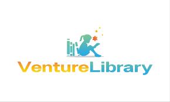

WELCOME TO OUR WEBSITE:"VENTURE LIBRARY"
Welcome to our Library website! Here, you can explore a vast collection of books, e-books, and resources across various genres. Our platform offers easy access to reading materials, research tools, and a community for book lovers. Whether you're looking to borrow a book or find information for your next project, our library is here to support your learning journey.


TYPES OF BOOKS
That we provide:
- NOVEL:
The novel is a genre of fiction, and fiction may be defined as the art or craft of contriving, through the written word, representations of human life that instruct or divert or both. The various forms that fiction may take are best seen less as a number of separate categories than as a continuum or, more accurately, a cline, with some such brief form as the anecdote at one end of the scale and the longest conceivable novel at the other. When any piece of fiction is long enough to constitute a whole book, as opposed to a mere part of a book, then it may be said to have achieved novelhood. But this state admits of its own quantitative categories, so that a relatively brief novel may be termed a novella (or, if the insubstantiality of the content matches its brevity, a novelette), and a very long novel may overflow the banks of a single volume and become a roman-fleuve, or river novel. Length is very much one of the dimensions of the genre.
- BIOGRAPHY:
A biography is a detailed account of a person’s life, written by someone other than the subject. The term “biography” is derived from two Greek words: “bio,” which means life, and “graphy,” which signifies writing. Thus, a biography is the written history of someone’s life, offering an in-depth look at their experiences, achievements, and challenges.
Biographies typically focus on the life of notable individuals, such as historical figures or celebrities, and provide a comprehensive view of their personal and professional journey.
Biographers, the authors of these works, aim to offer an accurate, well-researched portrayal of their subjects by studying various sources and conducting interviews if possible. This thorough research and attention to detail ensure that the resulting narrative is both informative and engaging.
- AUTOBIOGRAPHY:
Autobiography, the biography of oneself narrated by oneself. Autobiographical works can take many forms, from the intimate writings made during life that were not necessarily intended for publication (including letters, diaries, journals, memoirs, and reminiscences) to a formal book-length autobiography.
Formal autobiographies offer a special kind of biographical truth: a life, reshaped by recollection, with all of recollection’s conscious and unconscious omissions and distortions. The novelist Graham Greene said that, for this reason, an autobiography is only “a sort of life” and used the phrase as the title for his own autobiography (1971).
- FAIRYTALE:
A fairy tale (alternative names include fairytale, fairy story, household tale,[1] magic tale, or wonder tale) is a short story that belongs to the folklore genre.[2] Such stories typically feature magic, enchantments, and mythical or fanciful beings. In most cultures, there is no clear line separating myth from folk or fairy tale; all these together form the literature of preliterate societies.[3] Fairy tales may be distinguished from other folk narratives such as legends (which generally involve belief in the veracity of the events described)[4] and explicit moral tales, including beast fables. Prevalent elements include dragons, dwarfs, elves, fairies, giants, gnomes, goblins, griffins, merfolk, monsters, monarchy, pixies, talking animals, trolls, unicorns, witches, wizards, magic, and enchantments.
- POETRY:
Poetry is a vast subject, as old as history and older, present wherever religion is present, possibly—under some definitions—the primal and primary form of languages themselves. This article means only to describe in as general a way as possible certain properties of poetry and of poetic thought regarded as in some sense independent modes of the mind. Naturally, not every tradition nor every local or individual variation can be—or need be—included, but the article illustrates by giving examples of poetry ranging between nursery rhyme and epic.
- STUDY-MATERIALS:
The learning materials provided by the teacher, school, company, or organization for learning and research is called study materials. In other words, it is the collection of material including textbooks, basic syllabus of subjects, patter patterns, additional information of in-class activities, etc, that teachers may use to help students in achieving desired academic success.
Novel
Biography
Autobiography
FairyTale
Poetry
Study Materials
ThankYou!!
Visit Again.